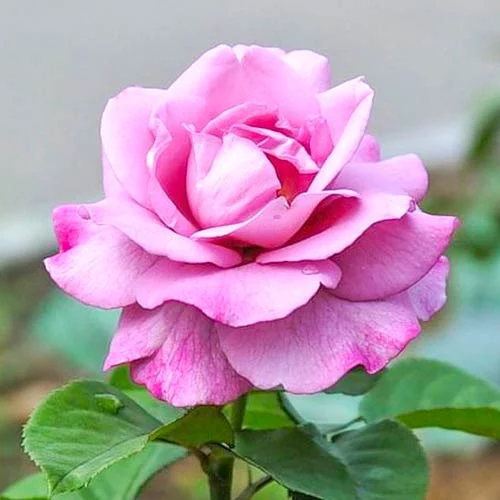
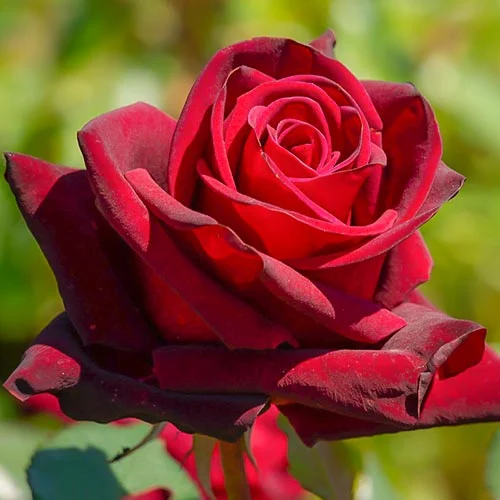
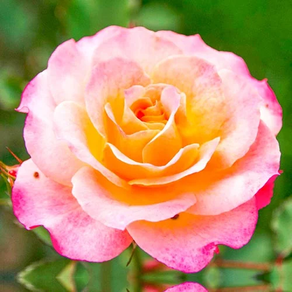
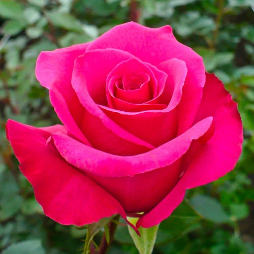
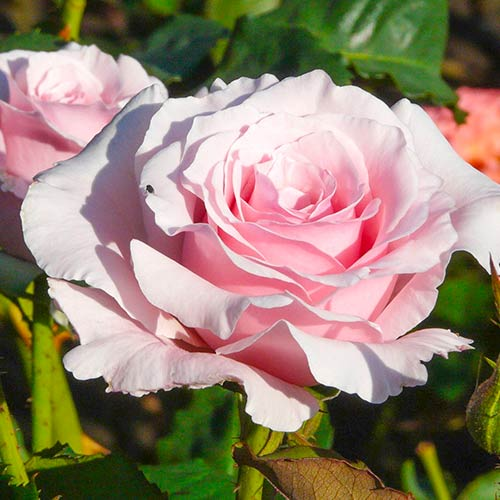
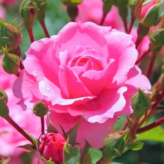

TRANDAFIR TEAHIBRID VIOLET
- colorit deosebit, foarte atractiv;
- perfect pentru tăiere și păstrarea în vaze;
- rezistent la boli și dăunători.

TRANDAFIR TEAHIBRID BORDO
- înflorire abundentă și de lungă durată;
- florile nu se scutură nici în condiții de vânt puternic;
- prezintă rezistență ridicată la îngheț.

TRANDAFIR TEAHIBRID LEMON PINK
- culoare încântătoare a florilor;
- o varietate ideală pentru a crea aranjamente florale elegante;
- înflorire pe tot parcursul sezonului.

TRANDAFIR TEAHIBRID DARK PINK
- parfum delicat, foarte plăcut;
- nu este un soi pretențios ca îngrijire;
- este un elemente decorativ perfect pentru a-ți transforma grădina într-un loc de vis.

TRANDAFIR TEAHIBRID LIGHT PINK
- nuanță delicată și elegantă a florilor;
- o varietate excelentă pentru a crea aranjamente florale șic;
- un soi fără pretenții pentru decorarea grădinii tale.

TRANDAFIR TEAHIBRID CREAM PINK
- varietate nepretențioasă și grațioasă, pentru decorarea grădinii tale;
- miros delicat și fascinant al florilor;
- înflorire îndelungată și abundentă.